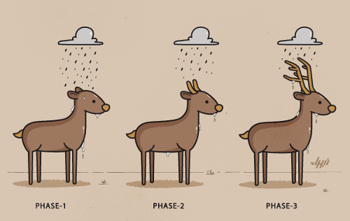
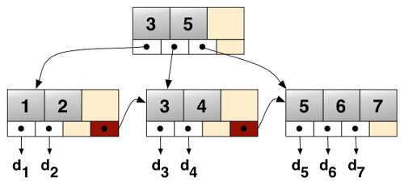

A Distributed Global Textual Community¶
In the digital humanities when a scholar wants to transcribe and edit texts such as ancient or medieval manuscripts, that scholar uses her institution’s own systems (for the rest of this post I will call this a ‘site’).
In Birmingham we have the Workspace for collaborative editing that I was the main coder on, this provides editing and analysis facilities for digital text projects hosted or associated with the University of Birmingham in some way. There are several of these kind of sites, maybe even dozens.
Textual Communities is another such site, based at the University of Saskatchewan, wherever that is, however, the difference is that Textual Communities aims to “provide an infrastructure and tools to allow anyone, anywhere, interested in a text to contribute to its study, as part of a community working together.”
Here is a photo of some of the main Textual Communities people:
So as part of the Estoria de Espanna Project, I have been using Textual Communities and integrating it somewhat with some display and analysis tools on a server in Birmingham.
Part of the vision from the Textual Communities people is to build a global editing community, which would imply being an open and distributed system, not being based on one server.
Furthermore, there are performance and reliability drawbacks to relying on a single server in Canada to hold the data and pass it back and forth in real time over HTTP.
So the first immediate approach I have taken is to use database replication.
1. Master/slave model¶
The immediate steps to make Birmingham back up the Canadian site is a simple and low level approach and it is a master/slave model.
Master = Canadian Server
Slave = Birmingham server
1. Every Hour, the slave server checks that the connecting SSH tunnel is still up, if it is not it re-establishes it. The SSH tunnel can be broken by server reboots or network issues.
2. Every time a write happens on the master server, the slave copies it automatically.
3. The code that builds the edition (the public frontend that is one of the key project outputs) works from the local copy of the database which is far more efficient, and if the master goes down, the data is still available locally.
This takes us 50% of the way but there is a big step missing. You cannot actually write data to the slave without breaking the approach, if master is down, and you start writing in the slave, there is no automatic way to get the changes back.
It also doesn’t scale very easily, adding a new site to the global textual community is a completely manual process. Beyond three or four institutions it would be a serious labour cost in maintaining the whole thing.
So sooner or later, you need to design a high level approach. The rest of this post is what I have been studying and building little test prototypes for.
2. A textual communities distribution system¶
Caveat emptor: So this the approach I have been working on, it may not be the approach favoured in the end by the Estoria project or Textual Communities.
Versions of data can be written at different sites and shared between them, yet what is considered the ‘approved’ or ‘best’ or ‘current’ version may be different at different sites.
Therefore the key to making textual communities into a distributed system is to separate the sharing of versions from the interpretation of these versions.
Each site must therefore keep an additional file/directory form of the data for use by the distribution system. These are plain-text files that can be easily backed up and easily analysed (a similar format to the existing textual communities API, see below).
The actual textual community software does not have to be run from these files, e.g. the Canadian site which uses MySQL can carry on doing so, but the internal changes to the database are exported in real time to plain text files in the data directory.
Likewise, changes by other sites can then be read into Canadian MySQL database from the data files (which changes are accepted and applied is subject to its merge algorithm, see below).
The data files are organised in a three level directory structure. The naming of the directories can be interpreted in different ways:
According to an SQL database approach:
database_name/table_name/row_id/
Or in a document oriented approach:
database_name/collection/document/
Or in object oriented way:
object_name_space/object_type/object_id/
Inside the lowest level directory are files, each file is a version of the data fragment expressed in (or at least wrapped) in JSON. The system of distribution does not actually care what fields are inside the file.
For example, a transcription of a page in the textual communities API is already expressed in this format with a field called “text” which contains the TEI XML text, as well as other fields (id, user, doc, create_date, commit_date, prev, next).
The first version of this data file would be named like this:
textual_communities/transcripts/1688800/1.json
New versions are written according to a principle called copy-on-write. When a new version is written, the old file is left alone, the new file is called:
textual_communities/transcripts/1688800/2.json
There is also a symbolic link called ‘current’, this points to what is the current canonical version of the data (for this particular site).
Different people at different sites can generate new versions of the file, which are automatically shared using git. However, what ‘current’ points to depends on a site specific algorithm.
The simplest algorithm is to point current at the file with the highest integer in the file name, however, sites with editors and crowd sourcing etc will not do that, current will only be re-pointed when the editor (the scholar) has approved it.
Groups of sites can have the same of or different algorithms, it does not affect the system of distribution.
Since data files are tracked and shared using git, this creates metadata that can be used to power a user-friendly web frontend for editors to see new versions, approve/disapprove them and look at history.
When a new version is approved by the local editor, current is repointed to the new file, if the version is not approved, it is just ignored. Undoing a new version is moving current to the older file, the rejected change is just ignored.
Using plain files and git solves many problems with crowd sourcing and distributed editing without having to write the software ourselves.
When the files are used, e.g. they are loaded into the Canadian site’s MySQL database, the file pointed to by current is uploaded, the other files can be safely ignored.
Git has an event based system known as ‘hooks’. So for example, when a new version of a file is created at a site, various actions can happen, such as notifying the relevant local editors that a newer version is available and can be approved or ignored.
3. Beyond Textual Communities - Digital Editions¶
While it is somewhat parochial to talk about the project I am working on, others in the global “Textual Communities” may have the same aspirations and problems. Eventually you want to take the live form of the text and turn it into digital editions.
The previous projects I was working on used Python and MongoDB for serverside applications, but increasingly I am using IndexedDB, Javascript and HTML5 to make the local browser do the work and allow the user to continue offline.
These data directories can, more or less, be exposed via the web server to Javascript as is, just with a few bits of censoring any relevant private information. This is several orders of magnitude more efficient than an application server like Django or Ruby on rails serving the data.
I have been working on a B+Tree representation of the Estoria de Espanna project data to provide search and a fast web frontend, these can be read directly from the data files.
A fast web server like Nginx throwing out static files combined with B+tree index for searches is pretty much unbeatable in terms of performance. It is also pretty future proof - stupid lasts longer than clever! The importance of this cannot be overstated in externally funded projects that exist for their period of project funding and then afterwards are maintained on a while-we-can basis.
Also, I am hoping to produce native mobile applications as part of the Estoria project output, compiling an abridged version of the data files directly into the app is far easier and has far better performance than trying to port web application code to a phone by statically linking in a Python interpreter.
4. The End of the Beginning¶
Somebody might come up with something better and the Textual communities probably have their own strong ideas, but this is where my thoughts and experiments are at now.
{kind=link}